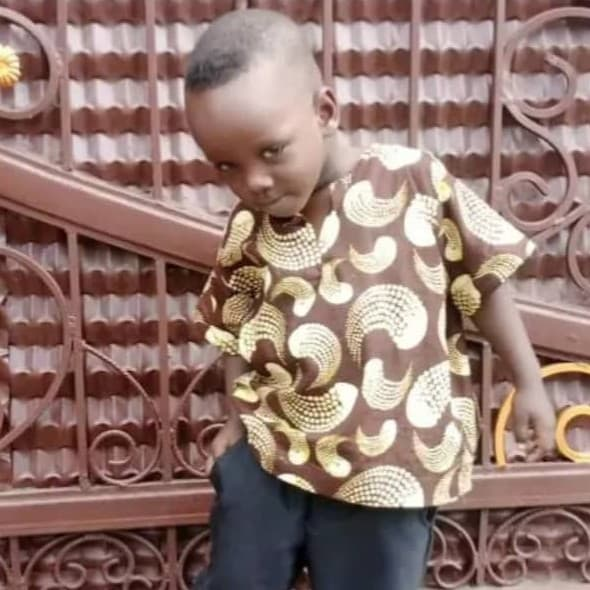
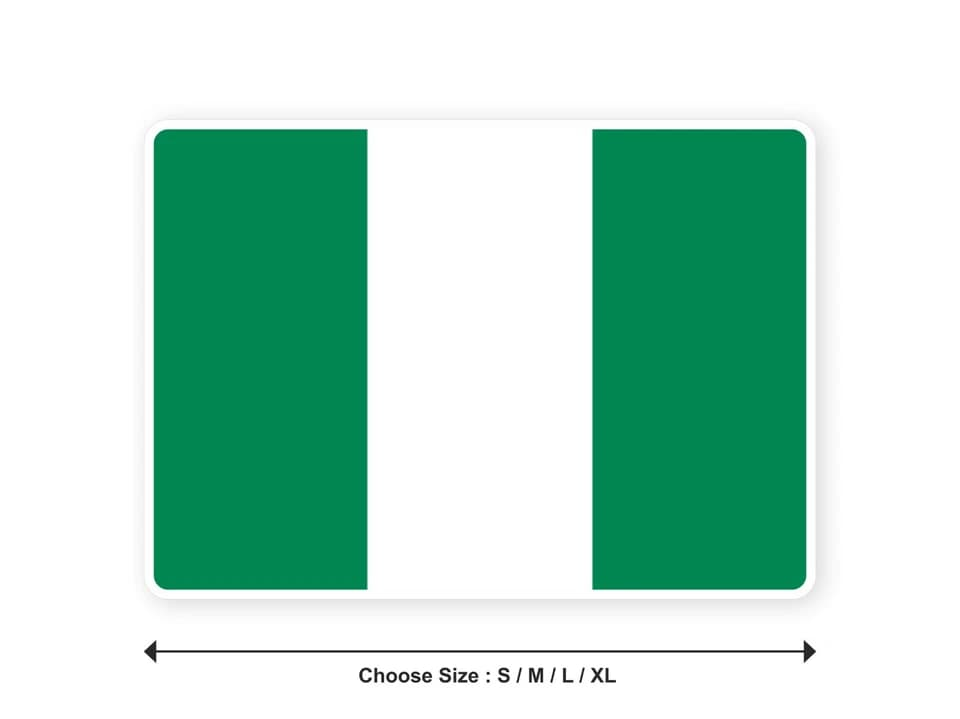

ThankGod
About Me
I am a civil servant, married with three children. I serve as the studio head and media director in my church. I studied chemical engineering and I’m passionate about technology, media, and continuous learning. Currently, I’m learning web development, Python programming, and data analysis.
Web Development
I am passionate about researching and learning new things, especially in technology and innovation. Currently, I am learning web development, programming, and digital marketing. I also enjoy watching sports and proudly support Arsenal FC. Additionally, I have a strong interest in media production and creative work, which aligns with my role as a media director